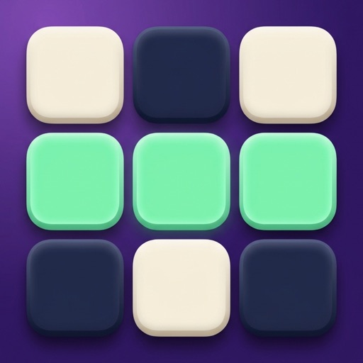
Dilki Vocabulary Crosswords
Gerçek Kelime, Tüm TanımlarReal Words, All DefinitionsEchte Wörter, jede DefinitionPalabras reales, cada acepciónVrais mots, chaque définitionParole vere, ogni definizioneRealne słowa, komplet znaczeńPalavras reais, cada definiçãoРеальные слова, все значенияСправжні слова, усі значення実在する英単語、すべての語義を収録실제 영어 단어와 모든 뜻كلمات حقيقية، كل التعريفاتKata Asli, Semua Definisi
Gerçek İngilizce kelimelerden oluşan gerçek bulmacalar — her kelimeyi çözdüğün an gerçek sözlük anlamını gör. Oynadıkça hint kazan.Real crossword puzzles built from real English words — see the actual dictionary definition the moment you solve each one. Earn hints as you play.Echte Kreuzworträtsel aus echten englischen Wörtern — sieh die tatsächliche Wörterbuchdefinition, sobald du ein Wort löst. Verdiene Hinweise beim Spielen.Crucigramas reales hechos con palabras reales en inglés — mira la definición real de diccionario en cuanto completes cada palabra. Gana pistas mientras juegas.De vraies grilles de mots croisés avec de vrais mots anglais — découvrez la définition du dictionnaire dès que vous trouvez un mot. Gagnez des indices en jouant.Veri cruciverba con vere parole inglesi — scopri la definizione del dizionario non appena trovi ogni parola. Guadagna suggerimenti giocando.Prawdziwe krzyżówki z prawdziwych angielskich słów — zobacz definicję słownikową zaraz po odgadnięciu każdego słowa. Zdobywaj podpowiedzi, grając.Palavras cruzadas reais feitas com palavras reais em inglês — veja a definição real de dicionário assim que completar cada palavra. Ganhe dicas jogando.Настоящие кроссворды из настоящих английских слов — смотрите определение из словаря, как только отгадаете слово. Зарабатывайте подсказки, играя.Справжні кросворди зі справжніх англійських слів — дивіться визначення зі словника, щойно відгадаєте слово. Заробляйте підказки, граючи.本物の英単語で作られた本格クロスワード。単語を解くたびに、その場で辞書の定義を確認できます。プレイするだけでヒントも獲得できます。진짜 영어 단어로 만든 진짜 크로스워드 — 단어를 하나씩 맞힐 때마다 바로 사전적 정의를 확인하세요. 플레이하면서 힌트도 획득하세요.كلمات متقاطعة حقيقية من كلمات إنجليزية حقيقية — شاهد المعنى الحقيقي من القاموس لحظة تحلّ كل كلمة. اربح تلميحات كلما لعبت.Teka-teki silang dengan kata-kata bahasa Inggris sungguhan — lihat makna kamus yang sebenarnya begitu kamu menyelesaikan tiap kata. Dapatkan petunjuk sambil bermain.
- 🧩 Gerçek kelimelerden bulmacalarCrosswords from real wordsKreuzworträtsel aus echten WörternCrucigramas con palabras realesMots croisés avec de vrais motsCruciverba con parole vereKrzyżówki z prawdziwych słówPalavras cruzadas com palavras reaisКроссворды из настоящих словКросворди зі справжніх слів本物の単語で作るクロスワード실제 단어로 만든 크로스워드كلمات متقاطعة من كلمات حقيقيةTeka-teki silang dari kata nyata
- 💡 Hint kazan, harf ya da kelime gösterEarn hints, reveal a letter or wordTipps verdienen, Buchstaben oder Wörter aufdeckenGana pistas y revela una letra o palabraGagnez des indices, révélez une lettre ou un motGuadagna indizi, rivela una lettera o una parolaZdobywaj podpowiedzi, odkrywaj literę lub słowoGanhe dicas e revele uma letra ou palavraЗарабатывайте подсказки, открывайте букву или словоЗаробляйте підказки, відкривайте літеру чи словоヒントを獲得して、1文字または単語全体を表示힌트를 얻고 글자나 단어를 공개اربح تلميحات واكشف حرفًا أو كلمةDapatkan petunjuk, ungkap huruf atau kata
- 👥 Tek cihazda birden çok profilMultiple profiles on one deviceMehrere Profile auf einem GerätVarios perfiles en un dispositivoPlusieurs profils sur un appareilPiù profili su un dispositivoWiele profili na jednym urządzeniuVários perfis em um dispositivoНесколько профилей на одном устройствеКілька профілів на одному пристрої1台で複数のプロフィール한 기기에서 여러 프로필عدة ملفات شخصية على جهاز واحدBeberapa profil di satu perangkat
- 📐 24 seviye, 3 ızgara boyutu24 levels, 3 grid sizes24 Level, 3 Rastergrößen24 niveles, 3 tamaños de cuadrícula24 niveaux, 3 tailles de grille24 livelli, 3 dimensioni di griglia24 poziomy, 3 rozmiary siatki24 níveis, 3 tamanhos de grade24 уровня, 3 размера сетки24 рівні, 3 розміри сітки24レベル、3つのグリッドサイズ24단계, 3가지 격자 크기24 مستوى و3 أحجام للشبكة24 level, 3 ukuran kisi
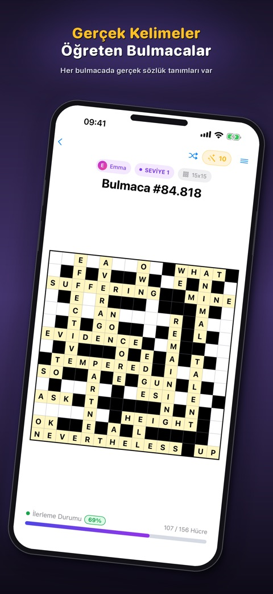
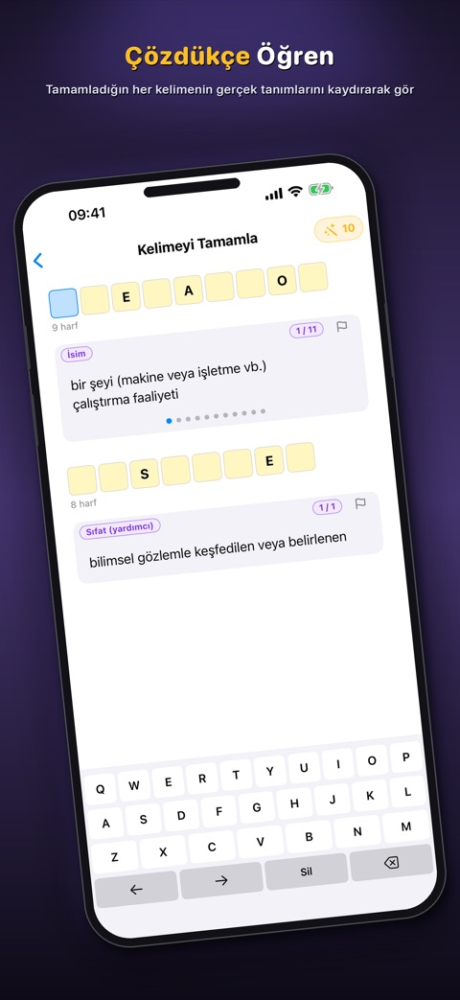

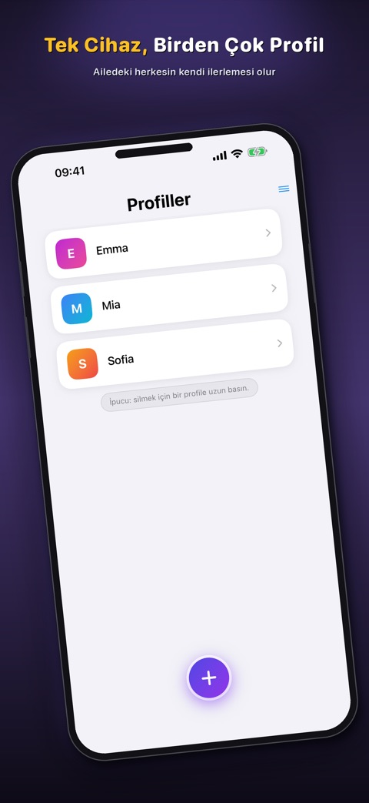

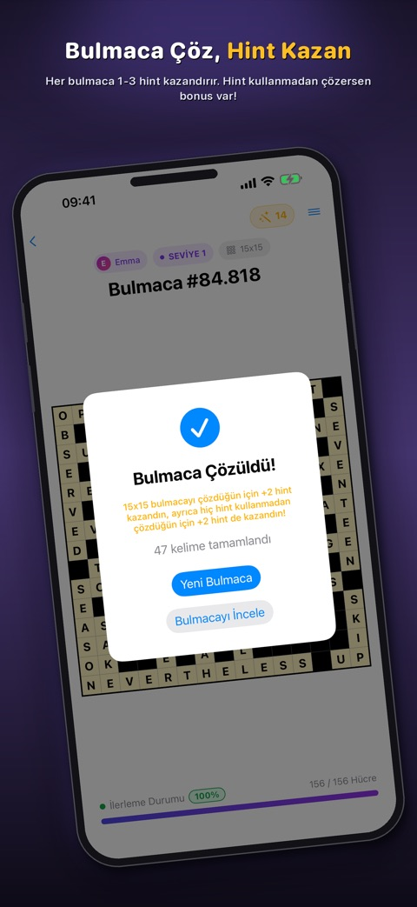

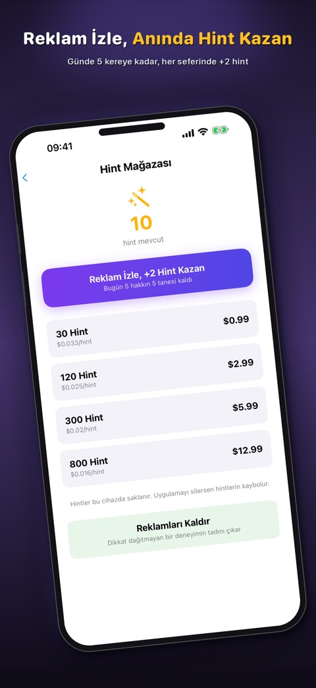


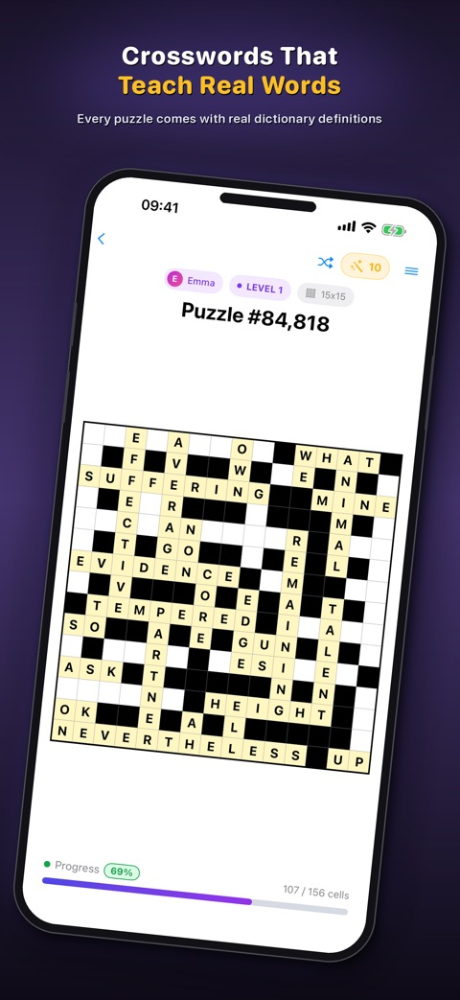


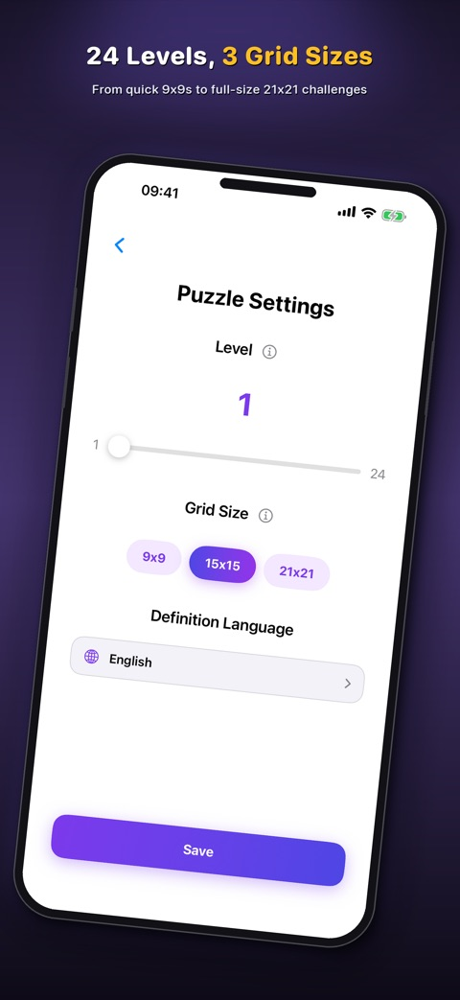


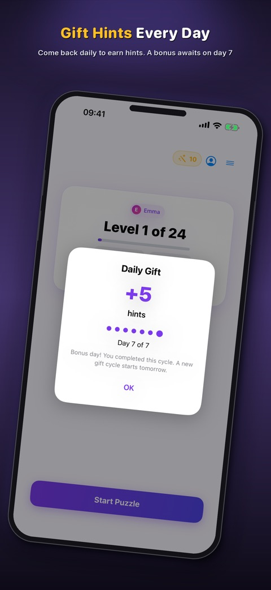

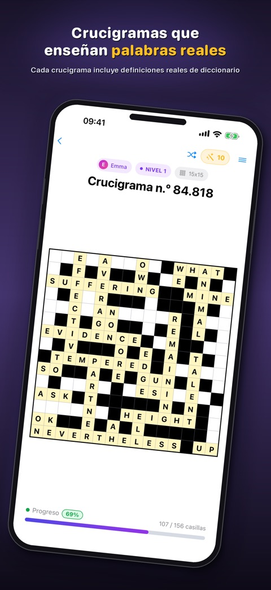

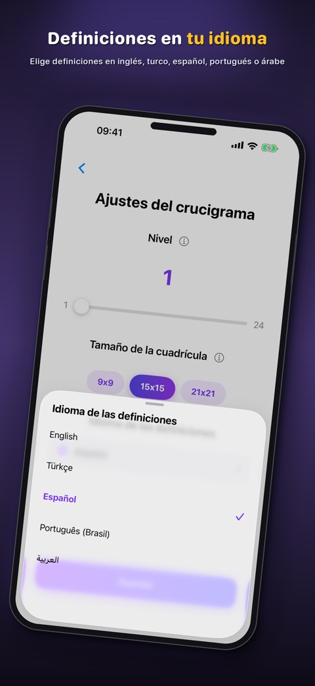


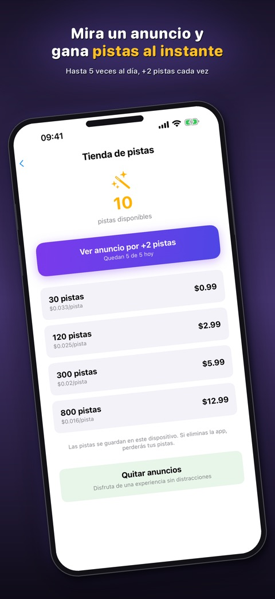
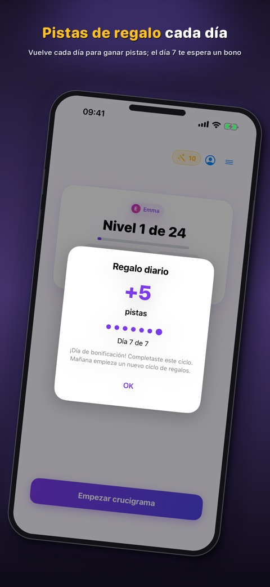


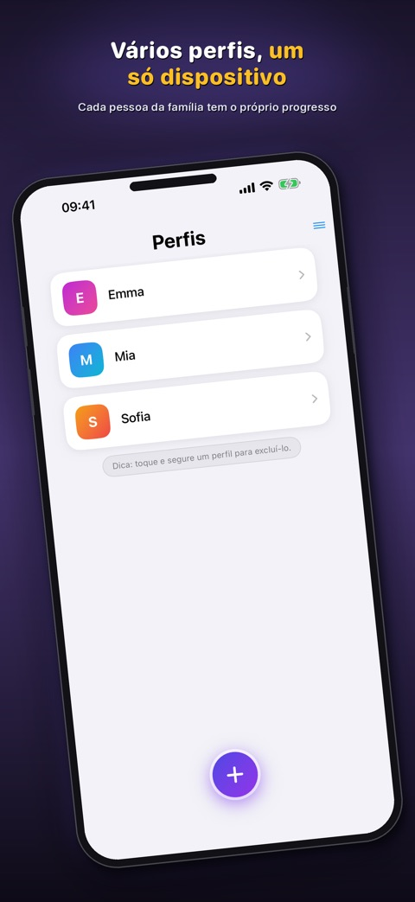

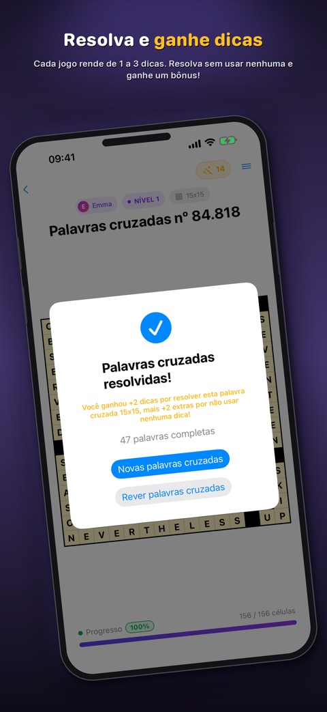
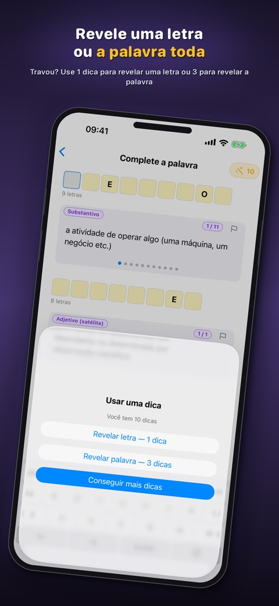
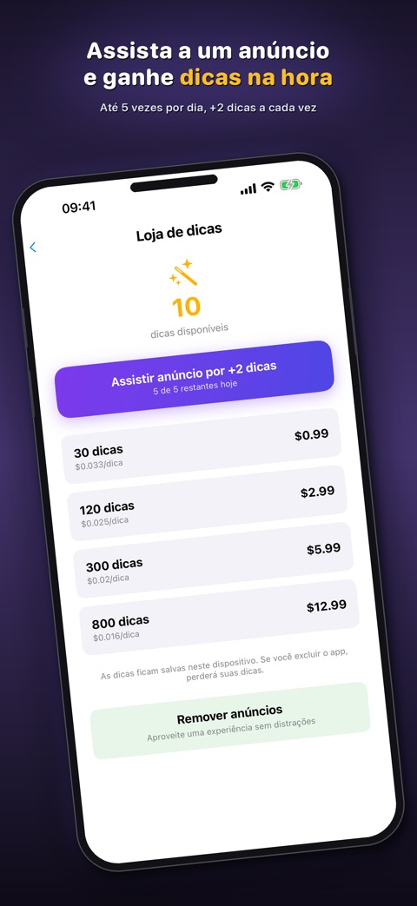


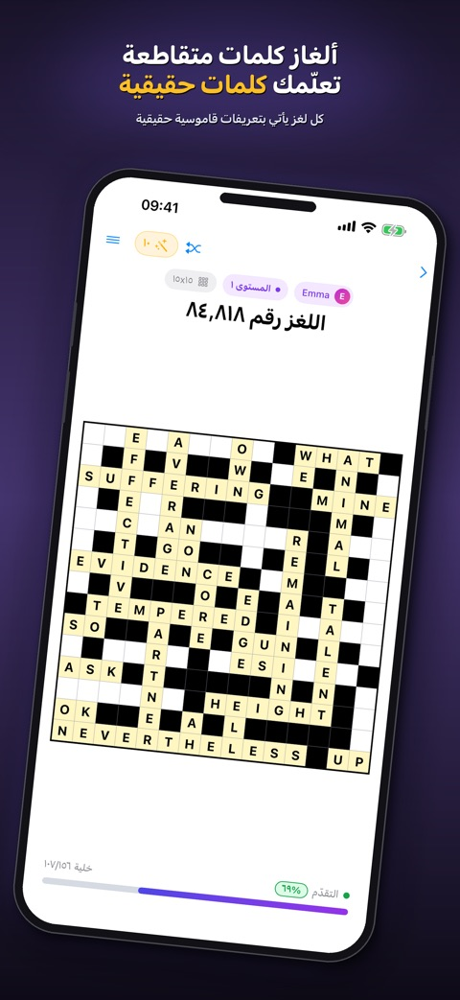


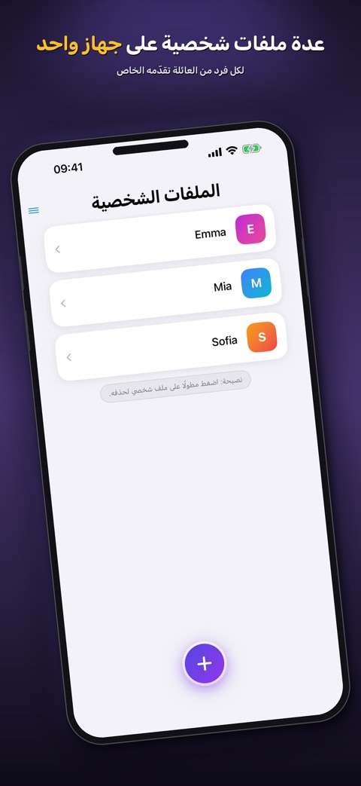

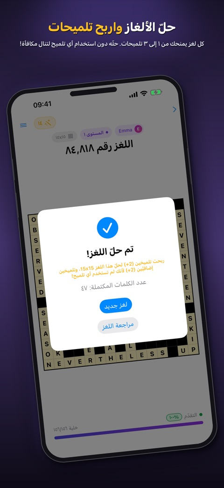
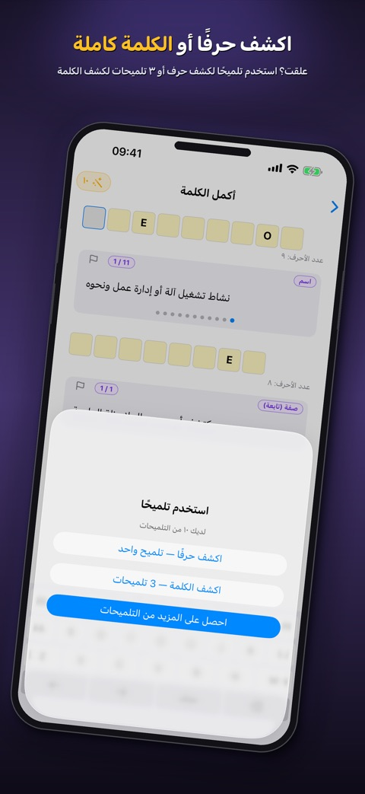
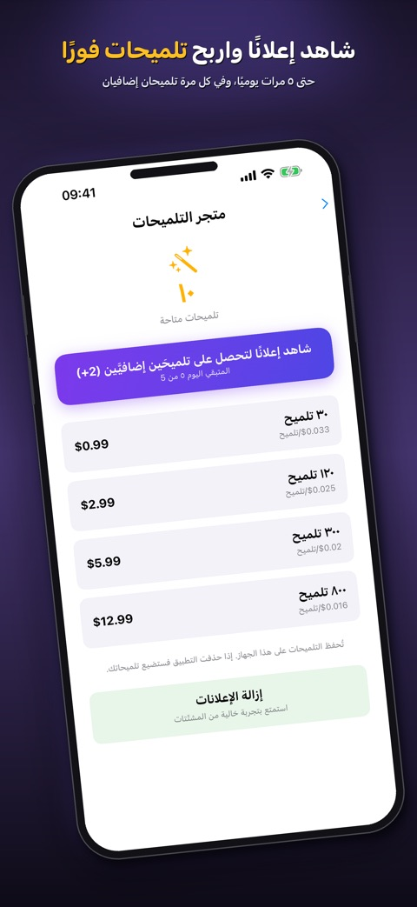
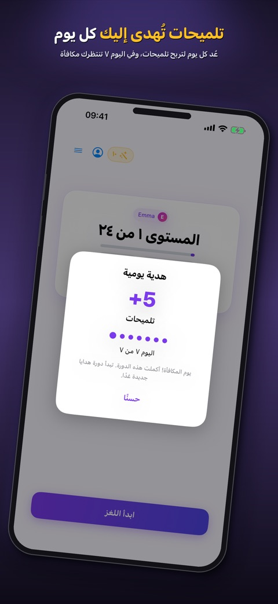